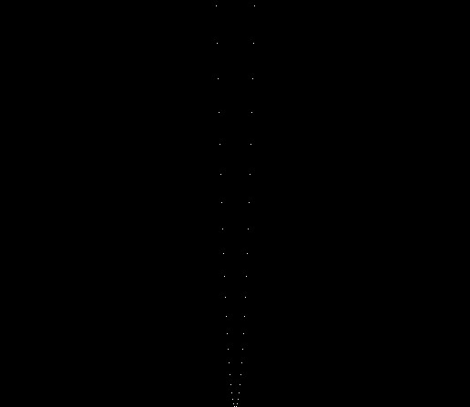

Click here to read the brief history of Transd
Suppose we have a math application which is meant to draw graphs of mathematical functions. Not a big math system, but a tiny program which nonetheless should allow the user to plot a graph of any arbitrary math function. This means that our program must know how to:
What are the ways to add this functionality to our tiny program? This was the question for which we have chosen to come up with our own solution which must satisfy the following:
What has come as the result of our efforts is a programming language which:
(The C++ project with this example can be found on Github.)
Let's see on a concrete example with our hypothetical tiny graphing application. This application receives from the user a description of some math function and then produces a 1000x1000 graphic PPM file containing the graph of this function on the interval from -500 to 500.
The code below is what this is all about: a configuration file where the user can tweak and extend functionality of a compiled binary application.
Export: {
x: Double(),
y: Double()
}
tst: {
getShade: (λ (with t (- (pow x 2) y)
(if (and (<= t 1.0)(> t -1.0))
1 0)))
}Here we specify that the host application (our binary math program) must provide us with two values: x and y coordinates of a graph and we return 1 or 0 depending on whether our function passes through this point or not. The whole host program in this case is less than 40 lines of code, and here is the essential part:
transd::HPROG prog = transd::createAssembly();
transd::Func* func = transd::loadProgram( prog, testFilePath, L"tst::getShade" );
double* x = (double*)transd::getExportVariable( prog, L"x" );
double* y = (double*)transd::getExportVariable( prog, L"y" );
for( int i = 0; i < width; ++i ) {
for( int k = 0; k < height; ++k ) {
*x = (double)i - width / 2;
*y = (double)k;
int res = *(int*)transd::execute( func );
uint8_t shade = 255 * res;
//...
}
}
Note, that the transd function "func" (the one that has been defined in the config file) is called one million times. This is the number of times the boundary between C++ and TransD is crossed within that double "for" loop. And it runs in just a fraction of time than would be needed for calling 1,000,000 times a function in some other extension language.
This is part of the 1000x1000 image with the function graph produced by our tiny math application in cooperation with TransD:

Note, that for this particular image where the graph is represented by dots it would be enough to call the function 1,000 times - one call for each x coordinate. But this is just an oversimplified illustrative example. If we have several functions and we want nice continuous antialiased lines instead of dots - we need to call the shading function for each of one million pixels in a 1000x1000 image.
The C++ project with this example can be found here.
And yet another example which actually does render continuous antialiased lines can be found here